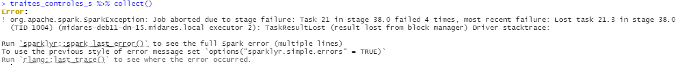
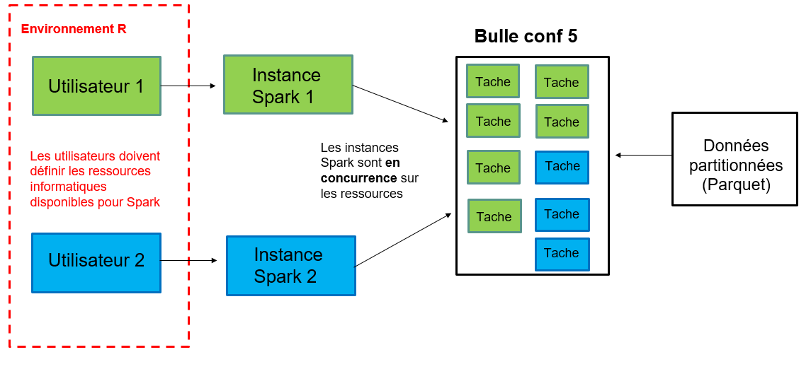
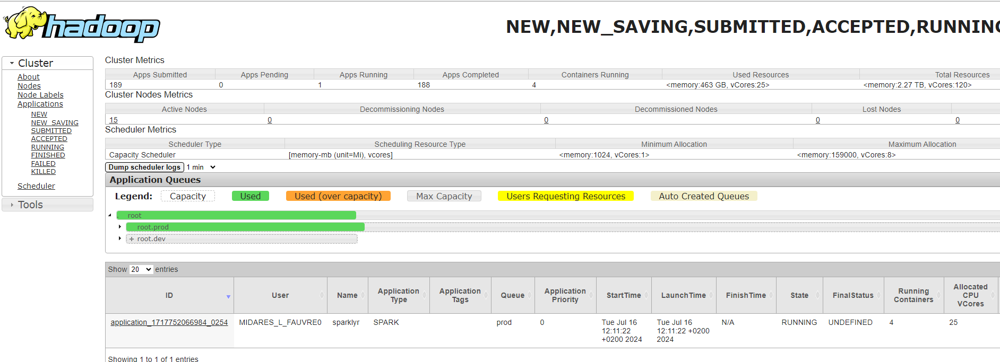
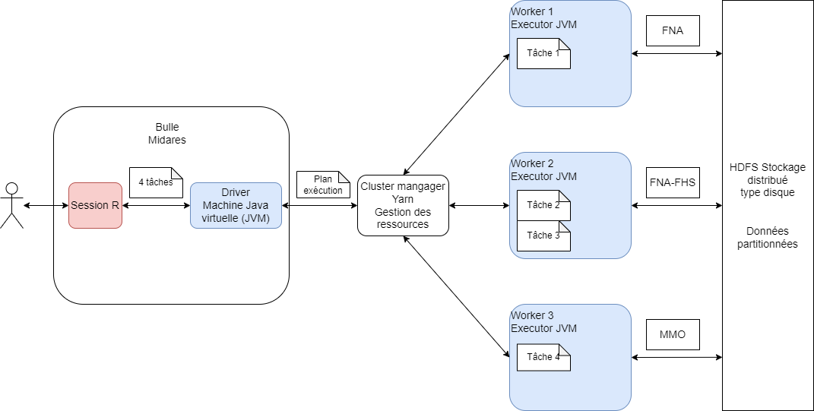
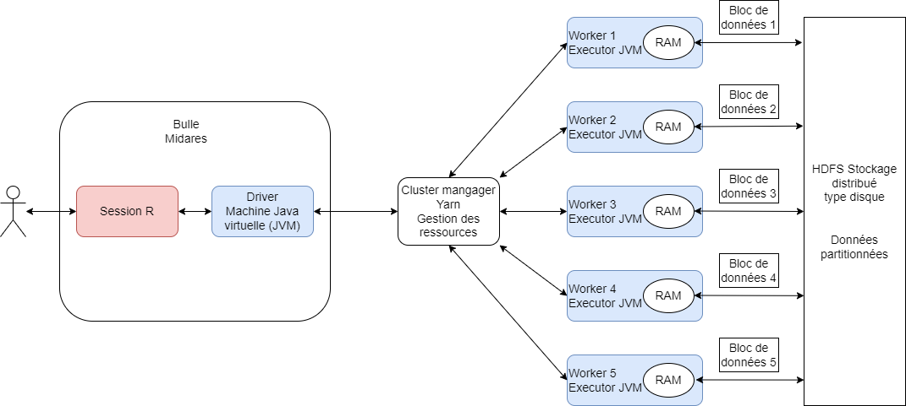
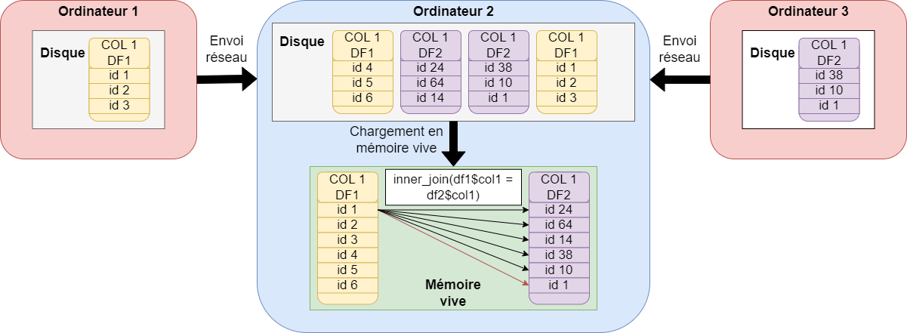
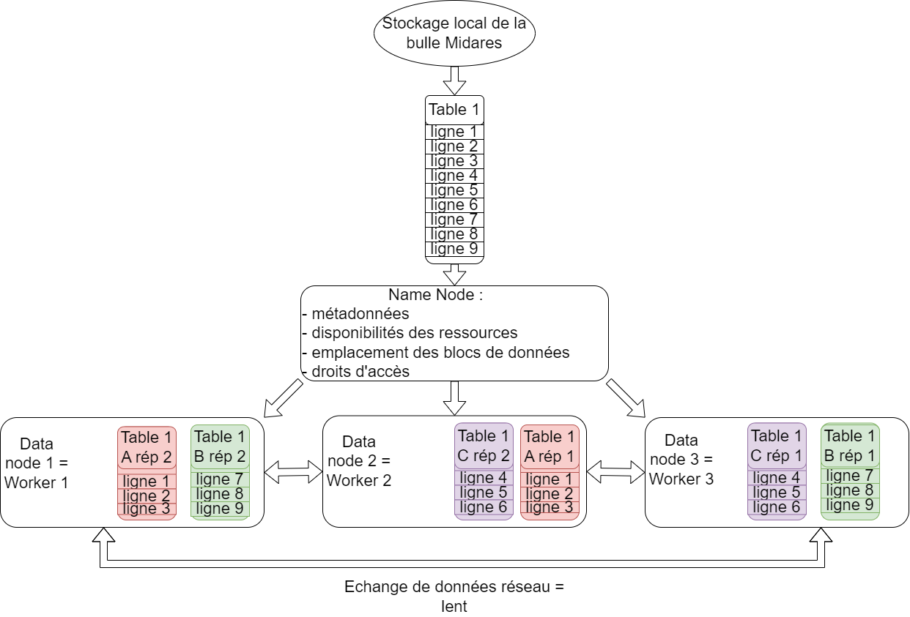
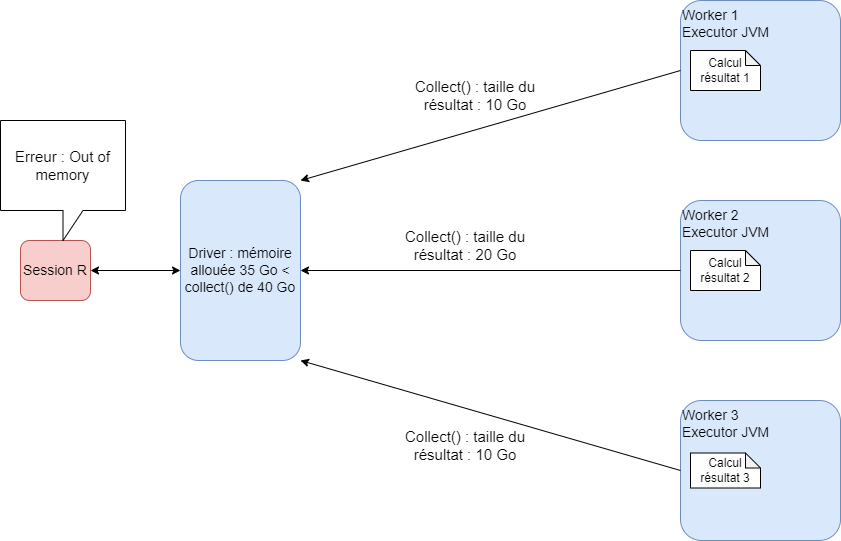
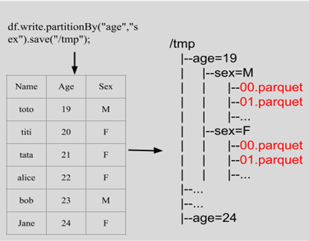
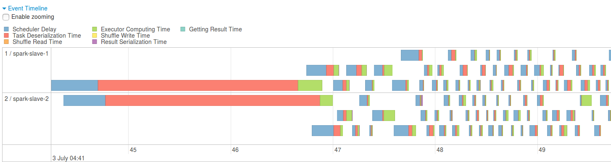

Initiation à Spark avec R en mode cluster
Au programme
MiDAS : une base de données volumineuse 📚
Utiliser MiDAS avec R : un défi 💭
Sparklyr : l’outil ergonomique de spark en R 👨💻
Les bonnes pratiques sur une infrastructure partagée 🖥️
Optimiser la mémoire : pourquoi et comment ⏳
Pour aller plus loin 💡
Un rapide tour de table 💬
MiDAS : une base de données volumineuse 📚
Qu’est-ce que MiDAS ?


Une des bases les plus volumineuses du SSP

Les administrations dont les données sont comparables à MiDAS utilisent un cluster Spark : Insee, Drees, Acoss, UNEDIC, Cnaf
▶️Le cluster spark est une solution très efficiente pour traiter des données de cette ampleur.
Concrètement, qu’est-ce que MiDAS ?

Pourquoi Spark ?
La manipulation des données MiDAS en l’état implique de nombreuses opérations de jointures qui nécessitent une puissance de calcul et un temps certains.
Où est MiDAS sur la bulle ?
Disponible dans l’espace commun (= Documents publics) : C:\Users\Public\Documents\MiDAS_parquet\Vague X
Au format parquet :
compression efficace des données : taux de compression de 5 à 10 par rapport au format csv
orienté colonnes
chargement efficace en mémoire des données
stockage partitionné des données avec
write_dataset()traiter des données sur disque
indépendant du logiciel utilisé : R, python, spark…
La documentation en ligne
Dictionnaire des données
Fiches présentant les concepts de l’indemnisation, du retour à l’emploi
Exemples d’implémentation en R
Conseils qualité des variables

Et vous, quels sont vos usages de MiDAS ? 👁️🗨️
Traiter MiDAS en R : un défi 👨💻
Une bulle CASD
Des ressources partagées entre tous les utilsateurs simultanés :
- 256 Go de mémoire vive (ou RAM)
- Un processeur (ou CPU) composé de 16 coeurs

Une bulle CASD
Le disque dur, aussi appelé Hard Disk Drive (HDD), est une solution de stockage permanente :
les données sont conservées même après l’arrêt de l’appareil
l’espace de stockage est volumineux
mais les opérations d’écriture et de lecture ne sont pas du tout instantannées
La mémoire vive, aussi appelée RAM, se distingue de la mémoire de stockage (disque) :
par sa rapidité, notamment pour fournir des données au processeur pour effectuer des calculs
par sa volatilité (toutes les données sont perdues si l’ordinateur n’est plus alimenté)
par l’accès direct aux informations qui y sont stockées, quasi instantanné.
Le processeur :
permet d’exécuter des tâches et des programmes : convertir un fichier, exécuter un logiciel
est composé d’un ou de plusieurs coeurs : un coeur ne peut exécuter qu’une seule tâche à la fois. Si le processeur contient plusieurs coeurs, il peut exécuter autant de tâches en parallèle qu’il a de coeurs
se caractérise aussi par sa fréquence : elle est globalement proportionnelle au nombre d’opérations qu’il est capable d’effetuer par seconde.
Traiter MiDAS en R : les limites
- Charger les données en mémoire vive
- Réaliser des opérations coûteuses en ressources
- Le partage des ressources de la bulle
Chaque utilisateur peut mobiliser toutes les ressouces de la bulle.
Traitement léger versus coûteux


les jointures
les opérations en
group_by()les opérations de tri avec
arrange()distinct()▶️ Exécution séquentielle sur un coeur du processeur + beaucoup de mémoire vive (données temporaires)
▶️ Erreur “out of memory”.
Pourquoi spark ?
| Solution testée | Avantage | Destination d’usage |
|---|---|---|
| Package « data.table » | Calculs parallélisés | pour bases < RAM |
Format « parquet » + package « arrow » |
Stockage moins lourd Chargement efficient |
pour bases < RAM |
| DuckDB | Gestionnaire de BDD | Pour des bases < 100 Go |
| Spark | Traitements distribués plus rapides Traitement de données volumineuses |
Pour des bases > 100 Go |
Un gain de temps considérable
| Calcul de la durée moyenne du premier contrat pour tous les individus MiDAS | Retour à l’emploi salarié des indemnisables | |
|---|---|---|
| Classique R | 4 heures | Crash |
| Duckdb | 8 minutes | 3 heures seul sur la bulle |
| Spark | 1 minute | 2 minutes |
Mais alors, pourquoi le cluster ? 🤔
Une bonne allocation des ressources entre utilisateurs


Et vous, quels sont vos problématiques et vos solutions ? ⚠️
Où est Midas, 2ème édition
Le cluster a son propre explorateur de fichiers à mettre en favori dans son navigateur : https://midares-deb11-nn-01.midares.local:9870/


Et mes bases sur la bulle ?
Il est possible de charger des bases enregistrées n’importe où sur la bulle sur HDFS : depuis vos documents personnels, depuis l’espace commun…


Un cluster de calcul

Connexion
library(sparklyr)
library(dplyr)
library(dbplyr)
conf <- spark_config()
conf["spark.driver.memory"] <- "20Go"
conf["spark.executor.memory"] <- "60Go"
conf["spark.executor.cores"] <- 4
conf["spark.executor.instances"] <- 2
cont["spark.yarn.queue"] <- "prod"
conf["spark.driver.maxResultSize"] <- 0
sc <- spark_connect(master = "yarn", config = conf)library(sparklyr)
library(dplyr)
library(dbplyr)
conf <- spark_config()
conf["spark.driver.memory"] <- "20Go"
conf["spark.executor.memory"] <- "60Go"
conf["spark.executor.cores"] <- 4
conf["spark.executor.instances"] <- 3
cont["spark.yarn.queue"] <- "prod"
conf["spark.driver.maxResultSize"] <- 0
sc <- spark_connect(master = "yarn", config = conf)Temps de connexion
Pour se connecter au cluster, il faut environ 5 minutes, à chaque connexion. Spark cluster n’est pas du tout adapté à des traitements légers (moins de 10 minutes).
Quizz : traitement nomal ou traitement très lourd
- Appariement de 2 bases mensuelles de la CNAF entre elles (4 millions de lignes par base)
- Repérage de la situation en emploi (MMO) d’un champ de bénéficiaires RSA un mois donné (2 millions de lignes)
- Calcul de la durée d’inscription (FHS, table DE), de la durée d’indemnisation (FNA, table PJC) et du retour à l’emploi d’un champ de 2 millions de demandeurs d’emploi
- Calcul de la durée d’indemnisation (FNA, table PJC) d’un champ de 20 millions de demandeurs d’emploi
- Calcul du retour à l’emploi d’un champ de demandeur d’emploi en fin d’un mois donné (5 millions de DEFM)
Chargement des données en spark
▶️ chargement en mémoire vive couteux en temps : par défaut, memory = FALSE
Spark data frames
mmo_17_df_spark est un spark data frame (sdf) : il ne peut pas être ouvert comme un data frame R classique, il n’est pas dans la session R.
Comment voir ma table ?
Récupérer une partie de la table : pas plus de 500 lignes
Spark data frames
une_partie_de_ma_table est un data frame R : il peut pas être ouvert, il est dans la session R. Cela signifie qu’il se situe sur la bulle
Un cluster de calcul
Sparklyr, c’est comme dplyr
Ensuite, vous pouvez programmer avec dplyr !
La lazy evaluation
Spark distingue deux types d’opérations :
les transformations : prennent en entrée un
spark_data_frameet retournent unspark_data_frame, elles ne déclenchent aucun calculPar exemple, le programme ci-dessous ne déclenche pas d’exécution :
les actions : forcent le calcul d’un résultat pour le récupérer et déclenchent l’exécution de toutes les transformations compilées jusqu’à l’appel de l’action.
Par exemple, le programme ci-dessous déclenche le calcul de toute la cellule précédente :
La lazy evaluation : un gain de temps considérable
La gestion des erreurs
En réalité, lorsqu’on appuie sur le bouton run, il ne se passe pas “rien”. Le code est compilé par spark : les erreurs sont repérées avant même que le code soit exécuté !
Récupérer un résultat
Les principales actions sont :
print()head()+collect()⚠️
collect()pour de petites tables : ne fonctionne pas sur des grosses tablestbl_cache()(écrire unspark_data_frameen mémoire pour le réutiliser)
Le bouton stop
Il est recommandé de ne pas utiliser ce bouton en programmant en sparklyr : il rend la session spark inutilisable par la suite, il faut fermer RStudio et rouvrir ensuite.
Les erreurs spark
Les erreurs de programmation sont soulevées avant que les calculs commencent.
Des erreurs peuvent survenir pendant l’exécution du code, quelques minutes après l’appel d’une action par exemple.
Collecter des données trop volumineuses
Une source fréquente d’erreur pendant l’exécution est l’appel d’un collect() sur des données trop volumineuses pour être collectées. La première étape du débuggage consiste à limiter les collect().



Les erreurs sparklyr
Les erreurs envoyées par spark sont “traduites” par sparklyr pour être affichées dans la console de R. Elles ne sont pas toujours très lisibles, ou très précises sur la nature de l’erreur/sa source.
… presque tout comme dplyr
La majorité des commandes dplyr fonctionnent sur un spark_data_frame avec le package sparklyr. Les divergences principales sont les suivantes :
| Fonctionnalité | tidyverse | sparklyr |
|---|---|---|
import d’un fichier .parquet |
read_parquet |
spark_read_parquet() |
| tri d’un tableau | arrange() |
window_order() ou sdf_sort() |
| opérations sur les dates | lubridate |
fonctions Hive |
| empiler des tableaux | bind_rows() |
sdf_bind_rows() |
| nombre de lignes d’un tableau | nrow() |
sdf_nrow() |
| faire pivoter un tableau | tidyr |
sdf_pivot() |
export d’un spark_data_frame |
spark_write_parquet() |
Quelques fonctions R pas encore traduites
Les fonctions de lubridate()ne sont pas adaptées au spark_data_frames.
Convertir une chaîne de caractère de la forme AAAA-MM-DD en Date
Calculer une durée entre deux dates
Ajouter ou soustraire des jours ou des mois à une date
Add_months
Si la date en entrée est le dernier jour d’un mois, la date retournée avec add_months(date_entree, int(1)) sera le dernier jour calendaire du mois suivant.
Format
Le int() est important car ces fonctions Hive n’accepte que les entiers pour l’ajout de jours : taper uniquement 5 est considéré comme un flottant dans R.
Tri dans un groupe pour effectuer un calcul séquentiel
ODD_spark <- spark_read_parquet(sc, path = "hdfs:///dataset/MiDAS_v4/odd.parquet", memory = FALSE) ODD_premier <- ODD_spark %>% group_by(id_midas) %>% window_order(id_midas, KDPOD) %>% mutate(date_premier_droit = first(KDPOD)) %>% ungroup() %>% distinct(id_midas, KROD3, date_premier_droit) %>% head(5)Tri pour une sortie :
sdf_sort(),arrange()ne fonctionne pasConcaténer les lignes (ou les colonnes
sdf_bind_cols())Dédoublonner une table
Pivot : les fonctions du packag
tidyrne fonctionnent pas sur données spark
Résumé statistique :
sdf_describe(),summary()ne fonctionne pas.Dimension :
sdf_dim, la fonctionnrow()ne fonctionne pas.Quantiles approximatifs : le calcul des quantiles sur données distirbuées renvoie une approximation car toutes les données ne peuvent pas être rappatriées sur la même machine physique du fait de la volumétrie,
sdf_quantile()Echantillonnage aléatoire :
sdf_random_split
Je veux voir ma table
- Vérifier le nombre de lignes sans collecter
- Vérifier la présence de doublons
Exporter des données sur disque
Sur la pause déjeuner par exemple 😉
Pourquoi ❓ Pour des données qui ne peuvent pas être collectées en mémoire vive
Export des spark data frames directement sous HDFS : à aucun moment on n’ouvre la table : on peut traiter des données beaucoup plus volumnieuses que la mémoire RAM !
Possibilité de récupérer ce fichier sur la bulle MiDARES = en local.
Exports simultanés
HDFS supporte les exports simultanés, mais le temp d’export est plus long lorsque le NameNode est requêté par plusieurs personnes simultanément
Si on souhaite la récupérer en local
Les exports sur HDFS
Lorsqu’on exporte une table depuis notre session R vers HDFS, celle-ci est automatiquement partitionnée, comme le reste des données.
Ainsi, cette table sera stockée en plusieurs morceaux sous HDFS et répliquée.
Il est possible de maîtriser le nombre de partitions avec la commande sdf_coalesce(partitions = 1) du package sparklyr.
Avec sdf_coalesce(partitions = 1), on n’aura qu’un seul fichier à télécharger depuis HDFS.
Avec sdf_coalesce(partitions = 200), on aura 200 morceaux de notre fichier à télécharger à la main (pas possible de faire tout sélectionner sous HDFS !).
L’idéal est d’adapter le nombre de partitions à la taille d’un bloc : un bloc mesure 128 MB.
Fermer sa session
Il faut impérativement fermer sa session spark après une session de travail. Deux moyens pour ça :
fermer R Studio
si on ne ferme pas RStudio, utiliser la fonction
spark_disconnect_all()dans son code
Si on souhaite lancer un code le soir en partant, on n’oublie pas le spark_disconnect_all() à la fin du code.
Partage des ressources
Les ressources réservés par un utilisateur ne sont libérées pour les autres que lorsqu’il se déconnecte. Ne pas se déconnecter, c’est bloquer les ressources. Si j’ai réservé deux ordinateurs du cluster sur 15, personne d’autres ne peut les réserver tant que je n’ai pas déconnecter ma session spark.
Nous fermerons les sessions ouvertes trop longtemps (départ de congés sans déconnexion) si des utilisateurs présents en ont besoin : risque de perte du travail non enregistré.
Télécharger des données en local


Et ensuite ?
Spark est un outil de traitement de données volumineuses. Il n’est pas toujours adapté :
pour de petites tables : il ne va pas engendrer de gain de temps, voire augmenter le temps
pour faire de l’économétrie poussée : tous les packages R ne sont pas traduits en spark
pour ouvrir sa table : on perd les avantages de spark si on collecte toute la table en mémoire RAM
Conseils :
Créer sa table d’étude en appariant les tables de MiDAS avec le cluster spark
L’exporter sous HDFS
La télécharger en local
La charger en R classique pour faire de l’économétrie
Quizz : spark ou pas spark ?
- faire des statistiques descriptives sur une unique table de 1 million d’individus et 30 variables déjà créée
- créer une table de 5 millions demandeurs d’emploi avec leur situation au regard de l’emploi (MMO), leur durée d’inscription (DE du FHS)
- apparier 4 tables mensuelles de la CNAF pour repérer la liste des
id_midasbénéficiaires de minima sociaux 4 mois donnés (4 millions chaque mois)
- faire de l’économétrie sur une unique table déjà créée
Econométrie et Machine Learning avec Spark
Il existe des outils pour faire de l’économétrie avec spark, la librairie Apache Spark MLlib. Elle relève d’une utilisation plus avancée de spark que nous ne traitons pas ici. Elle ne contient pas autant de modèles que le CRAN R pour la recherche en économétrie.
Il vous est conseillé de créer une unique table d’étude puis de la traiter en R classique pour l’économétrie.
Les bonnes pratiques 🤝
Mode local : schéma
Mode local : inadapté et mauvaise pratique
Spark et le mode local :
un seul ordinateur alors que spark est fait pour plusieurs ordinateurs distincts
beaucoup moins de ressources disponibles sur la bulle que sur le cluster
mauvaise gestion de l’allocation des ressources entre utilisateurs : pas faite pour plusieurs utilisateurs
ralentissements considérables et bugs : bloque les autres utilisateurs
▶️spark n’est adapté que pour le cluster de calcul, la bulle pour faire du R sans spark sur des données peu volumineuses
Inefficient de prendre beaucoup de ressources
Les ordinateurs du cluster ont besoin de s’envoyer des données par le réseau : c’est la partie la plus lente d’un programme spark !
Si j’augmente les ressources : par exemple, je réserve 3 ordinateurs du cluster plutôt que 2
Effet puissance de calcul : plus de ressources pour faire les calculs = réduction du temps de calcul
Effet augmentation des échanges réseau (shuffles) : augmentation du temps de calcul
Gêne des autre utilisateurs
Ne pas collecter
Collecter, c’est quoi ?
Collecter c’est utiliser l’instruction collect(). Elle permet de rapatrier l’ensemble des résultats du cluster vers la bulle et la session R de l’utilisateur en format R, par exemple des data.frames.
Collect() :
est une action : elle déclencher tous les calculs
implique des échanges réseau très importants : entre ordinateurs du cluster et du cluster vers la bulle : c’est extrêmement long, moins efficient que l’enregistrement sur disque directement depuis spark
rappatrie les résultats (une table) dans la mémoire vive de R, qui est sur la bulle : si le résultat est volumineux, cela bloque les autres utilisateurs
Recommandations :
Ne pas collecter des tables de plus de 15 Go
Utiliser les autres méthodes proposées pour ne pas bloquer les utilisateurs qui ont besoin de R en mode classique
Ne pas changer les configurations
Fermer sa session
Pour ne pas bloquer les collègues 👨💻
Yarn
Yarn permet de consulter la réservation des ressources par les utilisateurs.
On peut y accéder en copiant le lien suivant dans Google chrome sur la bulle (mettre en favori) : midares-deb11-nn-01.midares.local:8088/cluster
Vérifier que notre session est fermée et qu’on ne prend pas trop de ressources : yarn
Mutualiser les expériences
Aide au passage d’un code sur le cluster
Programmer entre collègues
Contributions à la documentation MiDAS : section fiches, à l’aide de pull requests sur github
Optimiser le code : non ! Mais optimiser la mémoire…
Comment fonctionne spark ?
Apache Spark : librairie open source développée dans le langage
scalaval TopHorrorsIGN2022 = Seq( (9, "Pearl"), (6, "The Sadness"), (6, "Offseason"), (7, "Hatching"), (8, "x") ).toDF("IMDB Rating", "IGN Movie Picks") import org.apache.spark.sql.functions.col val cols = List(col("IGN Movie Picks"), col("AVC Movie Picks")) val query = TopHorrorsIGN2022( "IGN Movie Picks" ) === TopHorrorsTheAVClub2022("AVC Movie Picks") val outerJoin = TopHorrorsIGN2022 .join(TopHorrorsTheAVClub2022, query, "outer") .select(cols: _*) outerJoin.show()scalaadapté pour maîtriser toutes les fonctionnalités desparket optimiser au maximum les traitements ensparksparkest compatible avec les langagesscala,R,python,java, et peut interpréter des commandes SQL.
Le driver en sparklyr
Le programme R est traduit en scala grâce au package
sparklyrLe driver évalue le programme, il lit le code
scalamais n’exécute rien du toutS’il remarque une erreur, l’erreur est envoyée directement à l’utilisateur en session R avant l’exécution du programme : c’est la force de la lazy evaluation.
Pas besoin d’optimiser son code !

source : documentation CASD disponible à Documentation Data Science
Catalyst optimise le code pour nous
Le driver contient un programme nommé Catalyst qui optimise le code scala automatiquement.
Spark optimise automatiquement les programmes soumis :
Compilation des transformations pour soulever les éventuelles erreurs
Intégration dans un plan d’exécution contenant les étapes nécessaires pour parvenir au résultat demandé par le programme
Optimisation du plan logique par le module Catalyst (driver Spark)
Catalyst optimise le code pour nous

Catalyst optimise le code pour nous
Par exemple si j’écris le programme :
Catalyst réécrit :
Cette optimisation est réalisée sur toutes les transformations compilée avant qu’une action déclenche l’exécution.
Catalyst optimise le code pour nous : laissons-le travailler !
Déclencher le moins d’actions possibles dans son programme permet de tirer pleinement parti de Catalyst et de gagner un temps certain.
Pour profiter des avantages de spark, la manière de programmer recommandée est différente de celle prédominante en R classique. On évite quoi ?
On évite :
de mettre des
collect()sur chaque table intermédiairede
collect()une table entièrede
print()à chaque étape
Sinon Catalyst n’a pas assez de code pour optimiser !
Catalyst optimise le code pour nous : laissons-le travailler !
Jointures : un cas particulier
Pour effectuer ce type de jointure avec deux tables de volumétries différentes : A est petite, B est très volumineuse

Solution rapide :
Solution lente :
Le rôle du cluster manager
Le cluster manager distribue les traitements physiques aux ordinateurs du cluster :
il connaît le meilleur plan physique fourni par Catalyst ;
il connaît les ressources disponibles et occupées par toutes les machines du cluster ;
il affecte les ressources disponibles à la session spark.
Le rôle du worker
Le worker effectue le morceau de programme qu’on lui affecte :
il ne connaît que les tâches qu’on lui a affectées ;
il peut communiquer avec le driver en réseau pour renvoyer un résultat ;
il peut communiquer avec les autres workers en réseau pour partager des données ou des résultats intermédiaires : c’est un shuffle.
Calcul distribué et récupération des résultats
Le réseau
Les workers communiquent avec le driver de la bulle MiDARES en réseau
Les workers communiquent entre eux en réseau pour s’échanger des données
Le réseau est un mode de communication lent
Traitement MAP distribué

Traitement REDUCE distribué
Le stockage distribué avec HDFS
La mémoire du driver
L’utilisation de la mémoire du driver
Cette configuration permet de collecter des statistiques descriptives et de petites tables sans gêner les autres utilisateurs.
Bonne pratique de partage des ressources
Le driver est dans la bulle Midares, qui a vocation à être réduite suite à la généralisation du cluster.
La bulle Midares a besoin de RAM pour fonctionner, 100% des ressources ne sont donc pas disponibles pour
sparklyr.Pour permettre le travail simultané fluide de 10 utilisateurs, la mémoire allouée au driver recommandée pour chaque utilisateur est de maximum 20 Go.
Il existe des alternatives pour ne pas collecter des résultats trop volumineux dans le driver.
Programmer sans collecter
La programmation en spark doit être adaptée aux contraintes de volumétrie des données : test de chaque étape, puis ne forcer le calcul qu’à la fin pour que Catalyst optimise l’ensemble du programme
La principale différence avec la programmation en R classique est que la visualisation de tables complètes volumineuses n’est pas toujours possible et n’est pas recommandée :
goulets d’étranglement même avec spark, car toutes les données sont rapatriées vers le driver puis vers la session R : erreurs Out of Memory
longue : échange entre tous les noeuds impliqués dans le calcul et le driver, puis un échange driver-session R en réseau = lent ;
beaucoup moins efficace que l’export direct en parquet du résultat (qui fonctionne toujours) : charger ensuite sa table finale en data frame R classique pour effectuer l’étude.
S’il est nécessaire de collecter, il faut prévoir beaucoup de RAM pour le driver avec le paramètre spark.driver.memory, ce qui empêche les autres utilisateurs de travailler.
Programmer sans collecter
Les résultats qu’il est recommandé de récupérer en mémoire vive en session R sont de la forme suivante :
une table filtrée avec les variables nécessaires à l’étude uniquement : sous MiDAS, toutes les jointures, les calculs de variable et les filtres peuvent être effectués de manière efficiente sous la forme de spark_data_frame, sans jamais collecter les données MiDAS ;
des statistiques descriptives synthétiques ;
les premières lignes de la table pour vérifier que le programme retourne bien le résultat attendu ;
une table agrégée pour un graphique par exemple, à l’aide de la fonction
summarise().
Programmer sans collecter
Je sais que la création de ma table donne le résultat souhaitée (car j’ai regardé ce dont elle a l’air avvec head()), maintenant je vais l’appeler une dizaine de fois pour collecter uniquement des statistiques descriptives.
Que se passe-t-il à chaque fois que je collecte une statistique descriptive ?
La création de la table va être exécutée à nouveau : très long ?
Comment faire ?
Optimiser la mémoire : conclusion
Pour programmer en spark sans aucune erreur :
Déclencher une action avec plusieurs transformations pour laisser Catalyst optimiser
Ne pas collecter tout une table
Persister ou cacher une table qu’on va appeler plusieurs fois pour ne collecter que des statistiques descriptives
Ne pas persister trop de tables : occupe de la mémoire RAM
Consulter le programme exemple sur la bulle CASD si besoin
Pour aller plus loin
Partitionnement
Le format .parquet (avec arrow) et le framework spark permettent de gérer le partitionnement des données.
Le partitionnement a un impact sur la manière dont les données sont organisées physiquement sur le système de fichiers.
Partitionnement
| Partitions | 2 | 5 | 1000 |
|---|---|---|---|
| Colonne qui a servi au partitionnement | 74,50% | 46,30% | 16,66% |
| Vers une autre colonne | 89,51% | 191,01% | 556,99% |
| Select distinct(*) | 136,79% | 163,68% | 1194,88% |
Éviter le problème des exécuteurs inactifs
Supposons que le jeu de données ait 8 partitions, un exécuteur (avec seulement 1 core) ne peut exécuter qu’une tâche(task) à la fois, et une partition = une tâche.
Cas 1 : 6 exécuteurs, au dernier tour, il ne reste que 2 tâches, 4 exécuteurs seront inactifs. Cas 2 : 4 exécuteurs, 2*4, aucun exécuteur inactif.
- Le nombre de partitions doit être divisible par le nombre d’exécuteurs.
- Le nombre de partitions doit être supérieur au nombre d’exécuteurs.
Éviter trop de partitions
La création de tâches entraîne des surcharges, qui doivent toujours être inférieures à 50 % du temps total d’exécution de la tâche.
# Repartition the DataFrame to a specific number of partitions df_repartitioned <- sdf_repartition(df, partitions = 10) # Repartition the DataFrame by a specific column, e.g., "commune_code". # The partition number will be the distinct value number df_repartitioned <- sdf_repartition(df, partition_by = "commune_code")La répartition est une opération très coûteuse, utilisez-la judicieusement.
En général, la taille recommandée des partitions est d’environ 128 à 512 Mo.
Optimiser la configuration des exécuteurs
Configuration recommandée :
- Un exécuteur devrait avoir entre 3 et 5 cores.
- Pour chaque core, il faut réserver entre 4 et 8 Go de mémoire.
En mode cluster, chaque exécuteur fonctionne dans une JVM (la JVM nécessite une mémoire supplémentaire et du CPU pour exécuter le GC).
- Évitez 1 core par exécuteur.
- Évitez trop de cores dans un seul exécuteur, cela peut causer des problèmes de contention de threads ou la surcharge du garbage collector.
Tâches Maximales en parallèles
Parallélisation
Max_Parallel_Tasks = Number_of_Executors * Cores_per_Executor
Par exemple, une session Spark dispose de la configuration suivante :
5 executor * 4 core = 20 tâches en parallèle. Pour un jeu de données de 200 partitions, il faut 10 tours pour terminer tous les calculs.
▶️Il n’existe pas de configuration universelle optimale pour tous, seulement la meilleure configuration pour vos tâches.
SparkUI
Spark UI permet de consulter le plan logique et physique du traitement demandé. Trois outils permettent d’optimiser les traitements :

Sparkhistory
- Sparkhistory pour des traitements de sessions fermées
Le sparkhistory entraîne l’enregistrement de logs assez lourdes, il est donc désactivé par défaut. Pour l’activer sur un programme :
Pyspark

Annexe
Le stockage distribué avec HDFS
Hadoop Distributed File System (HDFS)
stockage sur différentes machines : les différents ordinateurs workers du cluster
données divisées en blocs plus petits de taille fixe et répartis sur les machines : aucune table de MiDAS n’existe en entier sur le cluster
chaque bloc est répliqué trois fois : il existe trois fois les 10 premières lignes de la table FNA sur trois ordinateurs différents du cluster (résilience)
un NameNode supervise les métadonnées et gère la structure du système de fichiers : il sait où sont quels fichiers
les DataNodes stockent effectivement les blocs de données : les datanodes sont en fait les disques durs des workers du cluster, chaque ordinateur du cluster dispose d’un disque avec une partie des données MiDAS
le système HDFS est relié à la bulle Midares : possible de charger des données en clique-bouton de la bulle vers HDFS de manière très rapide et de télécharger des tables de HDFS pour les récupérer en local
Comment on fait du spark cluster avec R version courte ? ⏲️